Apache ORC · 核心原理图谱
自描述列式文件格式:单文件 header+stripes+footer+postscript 自定位,列投影 + 三级统计/SARG 跳块,写侧缓冲整 stripe 建索引。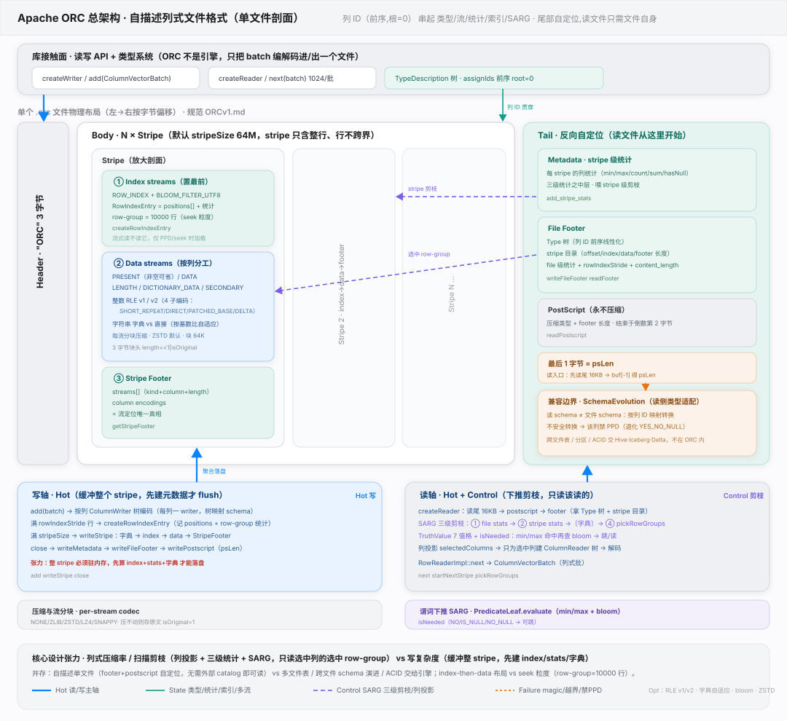
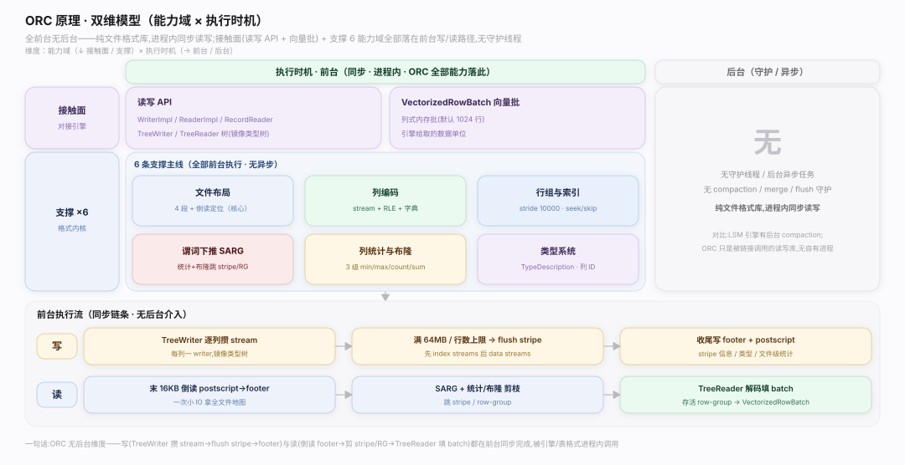
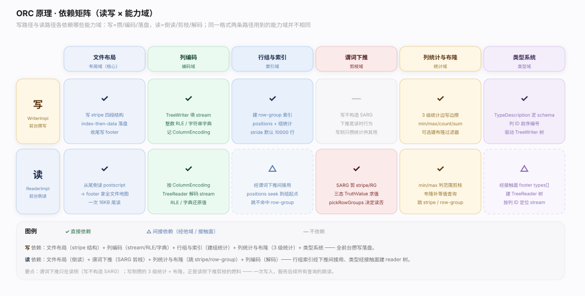
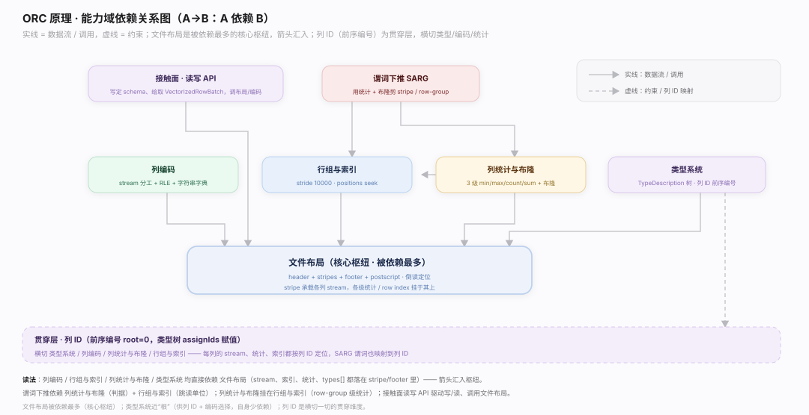
java/core/ + c++/)。| 层 | 主线 | 一句话职责 |
|---|---|---|
| 接触面 | 读写 API + 向量批 | 引擎给/取 VectorizedRowBatch,TreeWriter/Reader 树 |
| 布局 | 文件布局(核心) | header+stripes+footer+postscript,倒读定位 |
| 编码 | 列编码 | stream 分工 + 整数 RLE v1/v2 + 字符串字典 |
| 索引 | 行组与索引 | row index stride 10000,细粒度 seek/skip |
| 剪枝 | 谓词下推 SARG | 统计 + 布隆跳 stripe/row-group |
| 统计 | 列统计与布隆 | 3 级 min/max/count/sum + 布隆等值过滤 |
| 声明 | 内涵 | 对比 |
|---|---|---|
| 按列存,不按行 | 同列值连续存(不同 stream),带来高压缩(同类型值相邻)+ 只读所需列(列裁剪) | 与 CSV/Avro 等行存根本不同 |
| 多级统计支撑跳读 | 文件/stripe/row-group(每 10000 行)三级 min/max/count/sum + 可选布隆;谓词经 SARG 用统计跳整 stripe/row-group | 列存"扫得快"的关键 |
| 纯文件格式库,不管表/事务 | 只定义单文件字节布局 + 提供读写库,不管多文件表/schema 演进/ACID | 那是 Iceberg/Hive/Delta 的事,ORC 是被调用的底层砖块 |
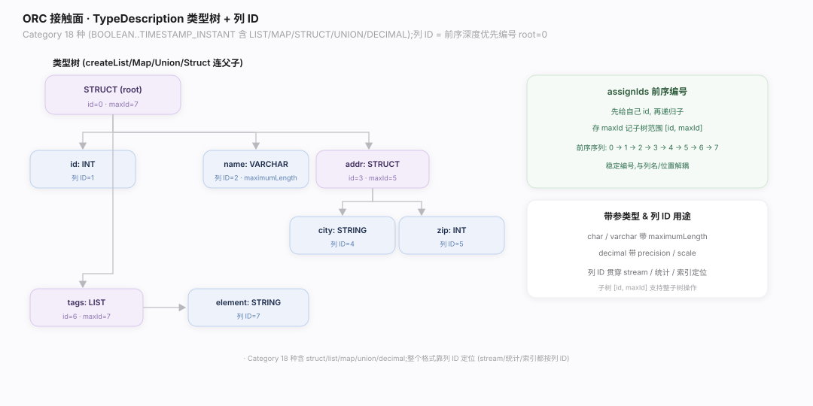
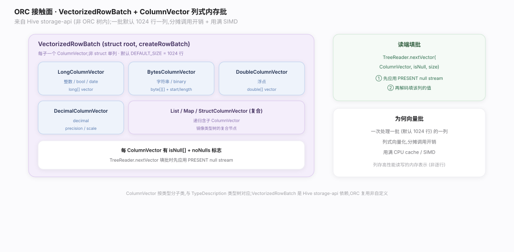
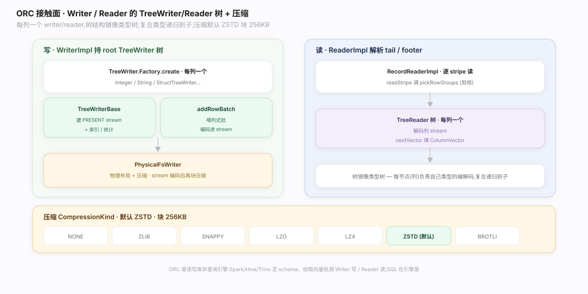
java/core/)。| 结构 | 定义 | 职责 |
|---|---|---|
| TypeDescription | TypeDescription.java:118 | schema 类型树 + 列 ID |
| assignIds | TypeDescription.java:670 | 前序编号赋列 ID(root=0) |
| VectorizedRowBatch / ColumnVector | Hive storage-api | 列式内存批 |
| WriterImpl / TreeWriter | impl/WriterImpl.java:242 | 每列 writer 树 + addRowBatch |
| ReaderImpl | impl/ReaderImpl.java:67 | 解析 tail/footer 建 RecordReader |
| RecordReaderImpl / TreeReader | impl/RecordReaderImpl.java:83 | 每列 reader 树解码填批 |
| TreeReader.nextVector | TreeReaderFactory.java:405 | 填批先应用 PRESENT null stream 再填值 |
| OrcFile.createWriter/createReader | OrcFile.java:1097 / :389 | 引擎拿 Writer/Reader 的静态工厂 |
| CompressionKind | CompressionKind.java:26 | ZLIB/SNAPPY/ZSTD…默认 ZSTD |
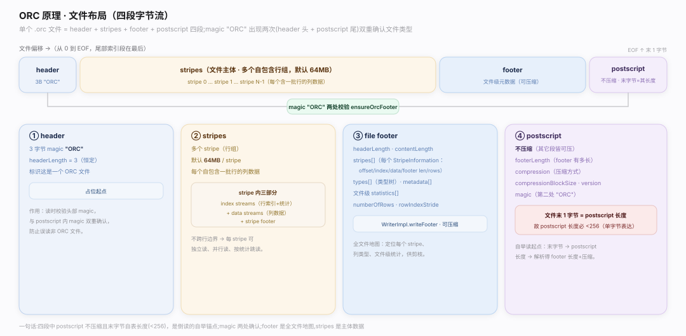
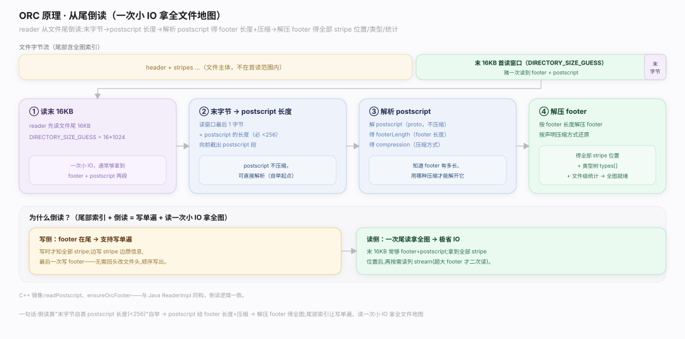
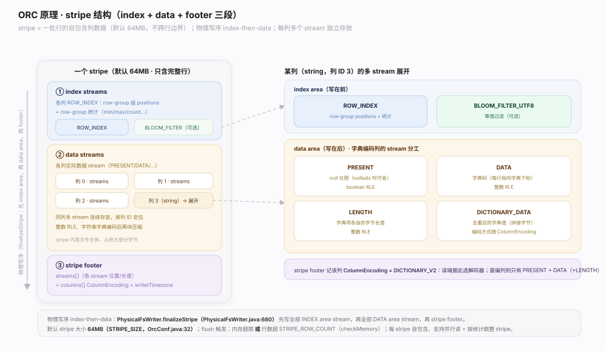
java/core/)。| 结构 | 定义 | 职责 |
|---|---|---|
| magic "ORC" | OrcFile.java:51 | 文件标识(header + postscript) |
| PostScript | (proto) | 不压缩尾段,末字节=其长度 |
| Footer | WriterImpl.java:693 | 组 Footer.Builder(stripes/types/统计) |
| writeFileFooter | PhysicalFsWriter.java:457 | 落 footer 字节 |
| writePostScript | PhysicalFsWriter.java:475 | 落不压缩 postscript + 末字节长度 |
| StripeInformation | (proto) | offset/index/data/footer len/rows |
| PhysicalFsWriter | PhysicalFsWriter.java:50 | 物理落盘(stripe/footer/postscript) |
| PhysicalFsWriter.finalizeStripe | PhysicalFsWriter.java:680 | index-then-data 物理写序 |
| STRIPE_SIZE / STRIPE_ROW_COUNT | OrcConf.java:32 / :35 | 大小/行数双触发 flush |
| ReaderImpl 倒读 | ReaderImpl.java:75,842 | 16KB 尾读 → postscript → footer |
| C++ 倒读镜像 | c++/src/Reader.cc:1545 / :1514 | readPostscript / ensureOrcFooter |
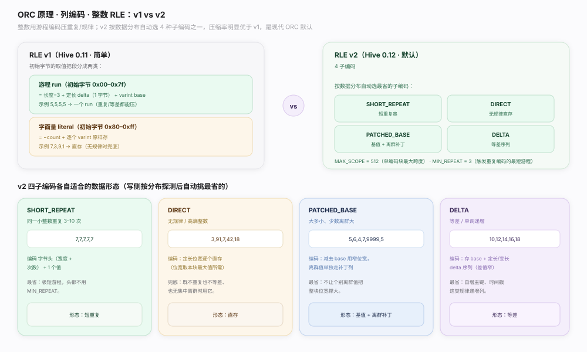
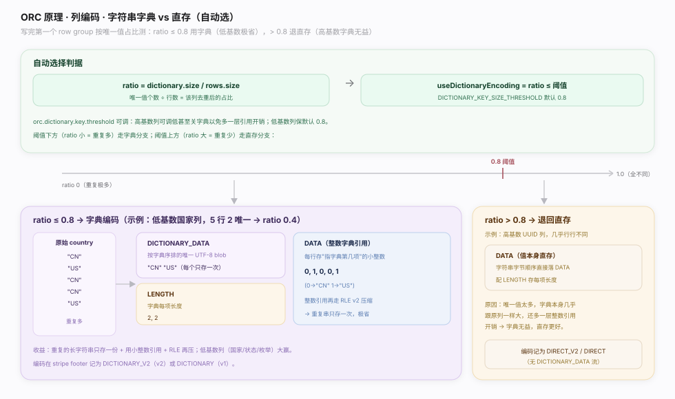
java/core/)。| 结构 | 定义 | 职责 |
|---|---|---|
| Stream.Kind | (proto) | PRESENT/DATA/LENGTH/DICTIONARY_DATA/SECONDARY… |
| ColumnEncoding.Kind | (proto) | DIRECT/DICTIONARY × v1/v2 |
| TreeWriterBase | impl/writer/TreeWriterBase.java:52 | 各列 writer 基类,持 index/file 统计边写边攒 |
| IntegerTreeWriter | impl/writer/IntegerTreeWriter.java:37 | 整数列 writer,值走 IntegerWriter(RLE) |
| StringTreeWriter | impl/writer/StringTreeWriter.java:31 | 字符串列 writer,继承字典基类 |
| BitFieldWriter | impl/BitFieldWriter.java:27 | PRESENT null 位图 stream 写入 |
| RunLengthIntegerWriter (v1) | impl/RunLengthIntegerWriter.java:31 | RLE v1 游程/字面量两态 |
| RunLengthIntegerWriterV2 | impl/RunLengthIntegerWriterV2.java:121 | RLE v2 四子编码,枚举 :123 |
| StringBaseTreeWriter.checkDictionaryEncoding | impl/writer/StringBaseTreeWriter.java:126 | 按 ratio ≤ 阈值 定字典/直存 |
| StringBaseTreeWriter | impl/writer/StringBaseTreeWriter.java:120 | 字典 vs 直存自动选 |
| DICTIONARY_KEY_SIZE_THRESHOLD | OrcConf.java:116 | 字典切换阈值(默认 0.8) |
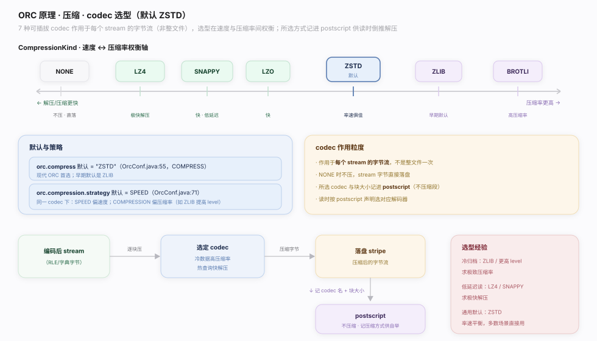
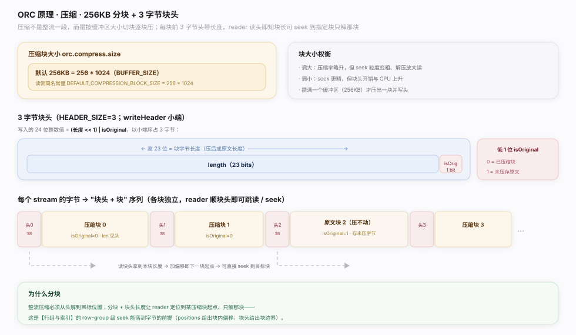
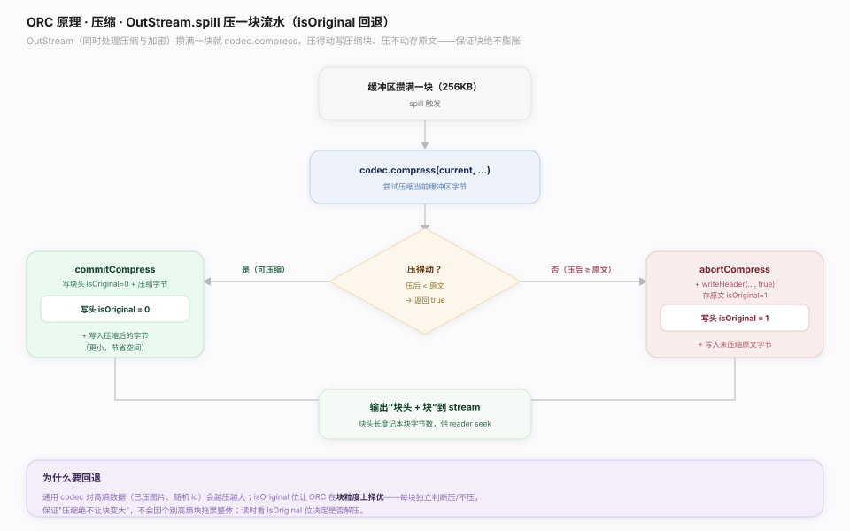
java/core/)。| 结构 / 常量 | 定义 | 职责 | |
|---|---|---|---|
| CompressionKind | CompressionKind.java:27 | NONE/ZLIB/SNAPPY/LZO/LZ4/ZSTD/BROTLI | |
| COMPRESS 默认 | OrcConf.java:55 | 默认 codec = ZSTD | |
| COMPRESSION_STRATEGY | OrcConf.java:71 | 压缩策略,默认 SPEED(可切 COMPRESSION) | |
| BUFFER_SIZE | OrcConf.java:48 | 压缩块大小,默认 256KB | |
| HEADER_SIZE | OutStream.java:52 | 块头 3 字节 | |
| writeHeader | OutStream.java:184 | (长度<<1)\ | isOriginal,小端 |
| spill / commitCompress / abortCompress | OutStream.java:375/318 | 压一块 + isOriginal 回退 | |
| DEFAULT_COMPRESSION_BLOCK_SIZE | ReaderImpl.java:76 | 读侧块大小常量 |
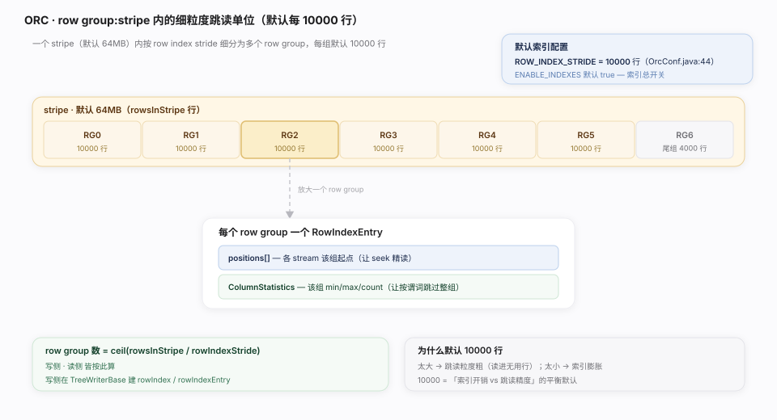
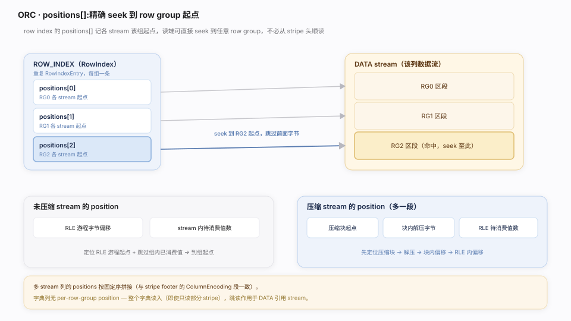
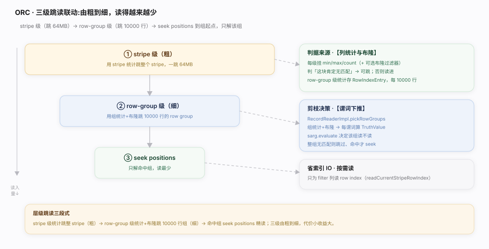
java/core/)。| 结构 | 定义 | 职责 |
|---|---|---|
| ROW_INDEX_STRIDE | OrcConf.java:44 | row group 大小(默认 10000 行) |
| stride 边界对齐 | 写侧 WriterImpl.java:568 / 读侧 RecordReaderImpl.java:1184 | 写读两端皆按同一 stride 算 row-group 边界 |
| RowIndexEntry | (proto) | positions[] + row-group 列统计 |
| ROW_INDEX stream | (Stream.Kind 6) | 存 row index(在 index area) |
| pickRowGroups | RecordReaderImpl.java:1177 | 按统计选读哪些 row group |
| pickRowGroups(内部) | RecordReaderImpl.java:1285 | 无 sarg 时全读、有则逐组求值 |
| readCurrentStripeRowIndex | RecordReaderImpl.java:1287 | 只为 filter 列读索引 |
| createRowIndexEntry | impl/writer/TreeWriterBase.java:323 | 写侧攒满一组时建 RowIndexEntry |
| StripePlanner.readRowIndex | impl/reader/StripePlanner.java:393 | 读侧按 sargColumns 掩码读 index stream |
| StripePlanner | impl/reader/StripePlanner.java:65 | stripe 读取规划(算流位置、读索引) |
| ENABLE_INDEXES | OrcConf.java:42 | orc.create.index 开关(默认 true) |
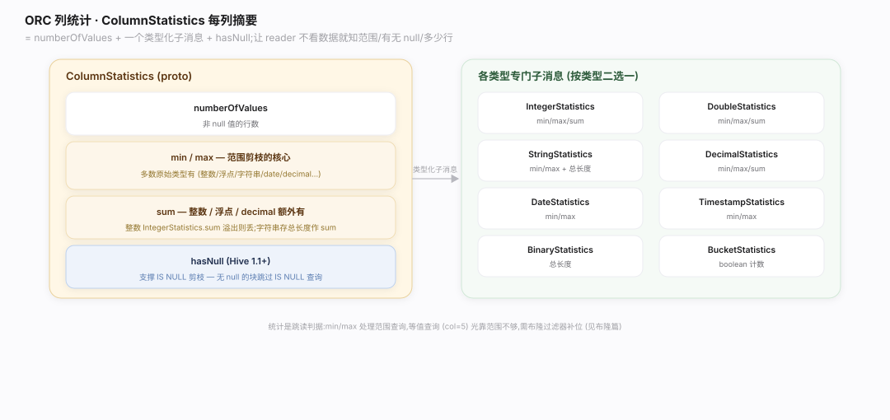
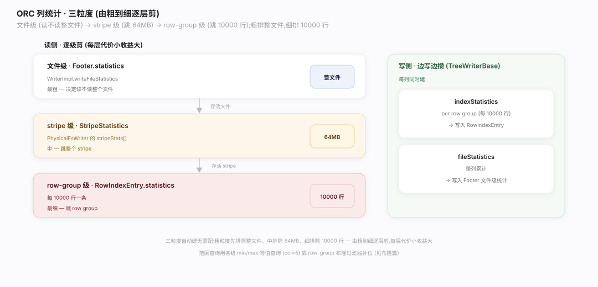
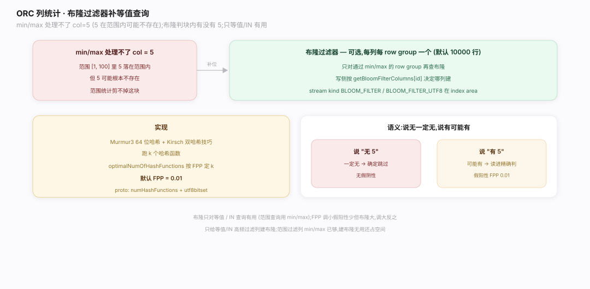
java/core/)。col=5 时 5 在 [min,max] 内跳不掉;需布隆判"块内有没有 5"。| 结构 | 定义 | 职责 |
|---|---|---|
| ColumnStatistics | (proto) | numberOfValues + min/max/sum + hasNull |
| ColumnStatisticsImpl | impl/ColumnStatisticsImpl.java:63 | 各类型统计的收集/合并 |
| ColumnStatisticsImpl.serialize | impl/ColumnStatisticsImpl.java:131 | 落 proto ColumnStatistics |
| indexStatistics / fileStatistics | impl/writer/TreeWriterBase.java:58 / :60 | 每列 per-group 与文件级两套统计 |
| 文件级统计 | WriterImpl.java:707 / :709 | writeFileStatistics 调用,跳整文件 |
| 布隆列选择 | impl/writer/TreeWriterBase.java:92 | 按 getBloomFilterColumns[id] 决定哪列建布隆 |
| StripeStatistics | PhysicalFsWriter.java:164 | 跳 stripe |
| RowIndexEntry.statistics | (proto) | 跳 row group |
| BloomFilter | util/BloomFilter.java:37 | Murmur3 + 双哈希,等值过滤 |
| BloomFilter.addBytes / testBytes | util/BloomFilter.java:111 / :158 | 写入 / 探测 |
| BLOOM_FILTER_FPP | OrcConf.java:99 | 假阳性率(默认 0.01) |
| BLOOM_FILTER_COLUMNS | OrcConf.java:140 | 建布隆的列 |
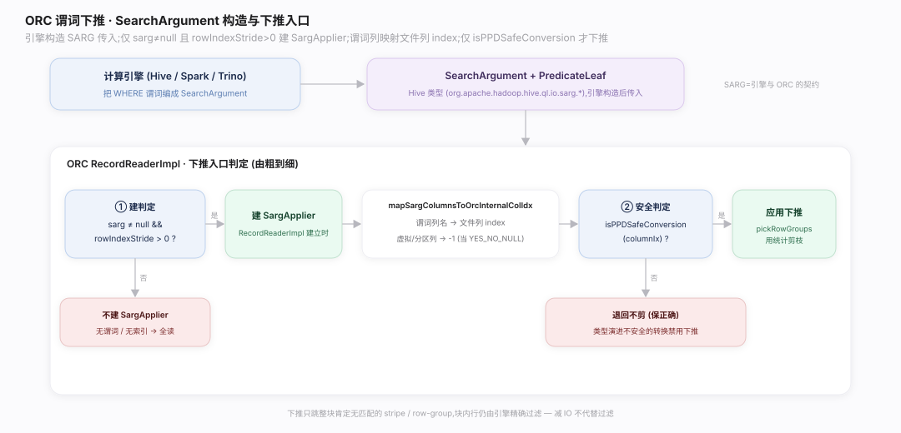
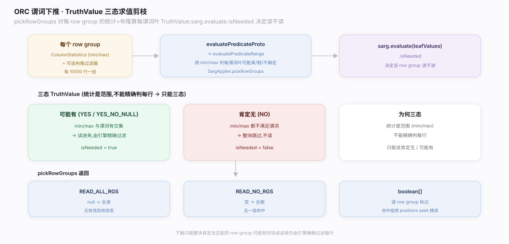
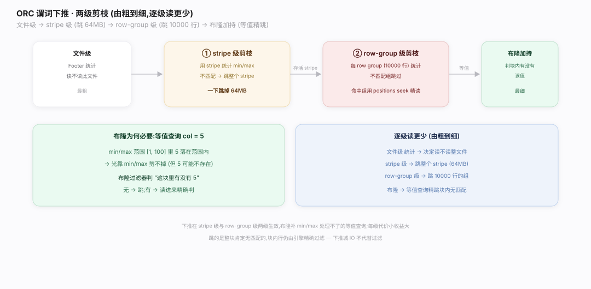
java/core/)。col=5 时 5 在 [min,max] 内跳不掉;需布隆过滤器判"块内有没有 5"。| 结构 | 定义 | 职责 |
|---|---|---|
| SargApplier | RecordReaderImpl.java:246 | 建于 sarg≠null 且有索引 |
| SargApplier(类) | RecordReaderImpl.java:1110 | 封装谓词求值 + row-group 选择 |
| pickRowGroups | RecordReaderImpl.java:1177 | 按统计选读哪些 row group |
| mapSargColumnsToOrcInternalColIdx | RecordReaderImpl.java:193 | 谓词列→文件列 index |
| evaluatePredicateProto | RecordReaderImpl.java:666 | 统计→TruthValue 求值 |
| evaluatePredicateRange | RecordReaderImpl.java:719 | min/max 范围判真/假/不定 |
| isPPDSafeConversion(调用) | RecordReaderImpl.java:1217 | 类型演进安全才下推 |
| isPPDSafeConversion(定义) | impl/SchemaEvolution.java:303 | 判该列转换是否安全下推 |
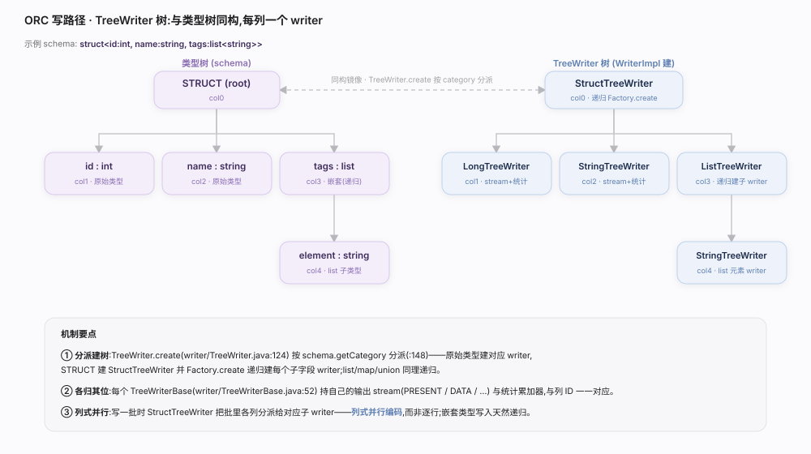
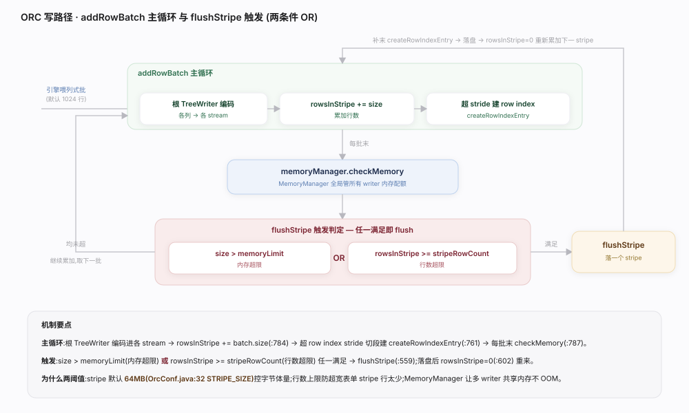
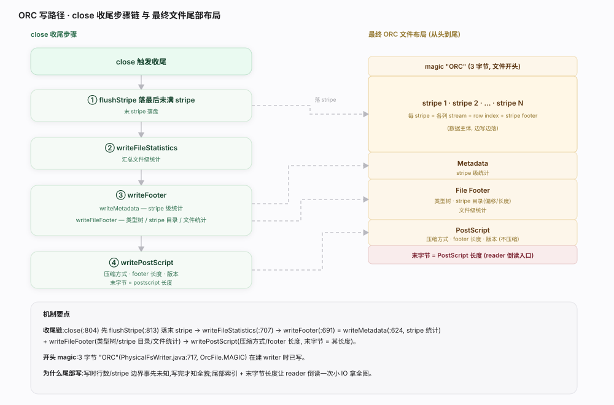
java/core/)。addRowBatch 的批越大越摊薄调用开销,但太大增内存;默认 1024 行合适。| 结构 / 方法 | 位置 | 职责 |
|---|---|---|
| TreeWriter.create | writer/TreeWriter.java:124 | 按 category 建 writer 树 |
| StructTreeWriter | writer/StructTreeWriter.java:44 | 递归建子字段 writer,列式分派 |
| addRowBatch | WriterImpl.java:733 | 写主循环,编码 + 攒 row index |
| checkMemory / flushStripe 触发 | WriterImpl.java:349 | size>limit 或 rows>=上限则 flush |
| flushStripe | WriterImpl.java:559 | 落一个 stripe,清零重来 |
| MemoryManager | WriterImpl.java:112 | 全局内存配额,多 writer 共享 |
| close → writeFooter → writePostScript | WriterImpl.java:804/691/630 | 收尾写 footer + postscript |
| writeFileFooter / writePostScript(物理) | PhysicalFsWriter.java:717 / :475 | 物理落 footer(类型树/stripe 目录/文件统计)+ 不压缩 postscript |
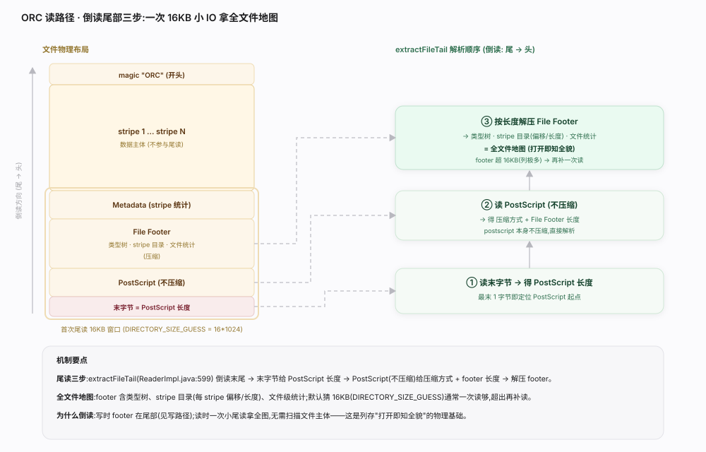
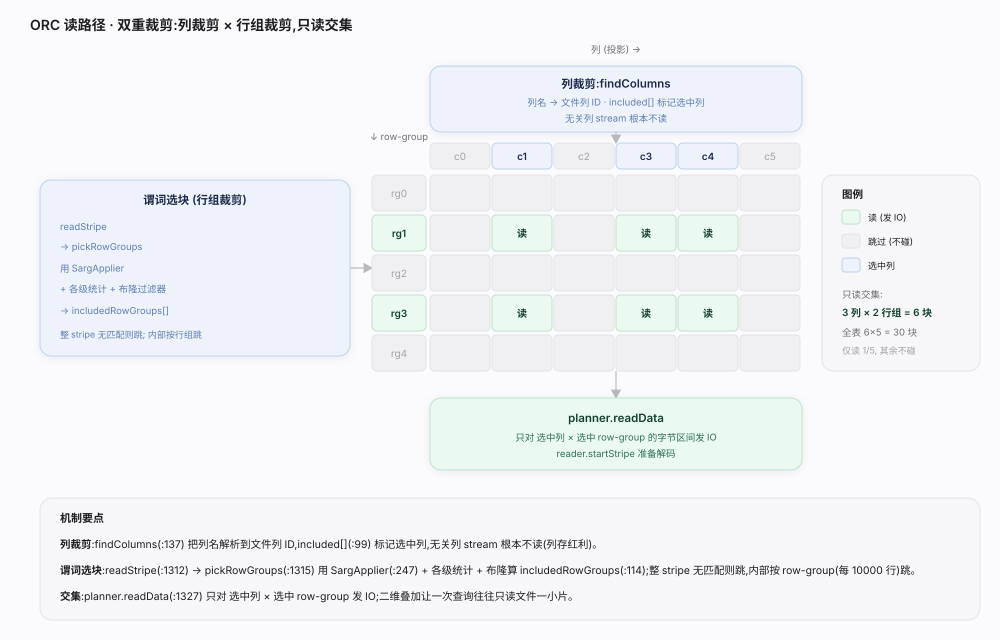
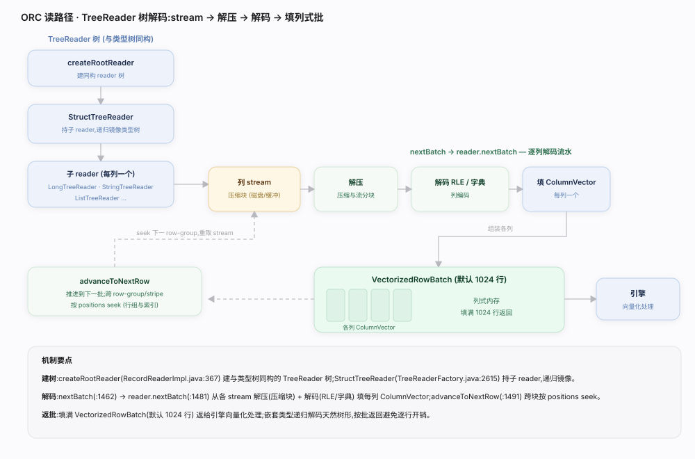
java/core/)。SELECT * 读全部 stream。| 结构 / 方法 | 位置 | 职责 |
|---|---|---|
| extractFileTail | ReaderImpl.java:599 | 倒读尾部拿 postscript+footer |
| DIRECTORY_SIZE_GUESS | ReaderImpl.java:75 | 尾读猜测 16KB |
| findColumns / included[] | RecordReaderImpl.java:137/99 | 列裁剪:列名→列 ID |
| readStripe / pickRowGroups | RecordReaderImpl.java:1312/1315 | 谓词选 stripe/row-group |
| planner.readData / startStripe | RecordReaderImpl.java:1327/1328 | 只读选中列×选中行组 |
| createRootReader / StructTreeReader | RecordReaderImpl.java:367 / TreeReaderFactory.java:2615 | 建解码树 |
| StripePlanner | impl/reader/StripePlanner.java:65 | 算流位置、按需读 index/data |
| nextBatch | RecordReaderImpl.java:1462 | 解压+解码填列式批 |
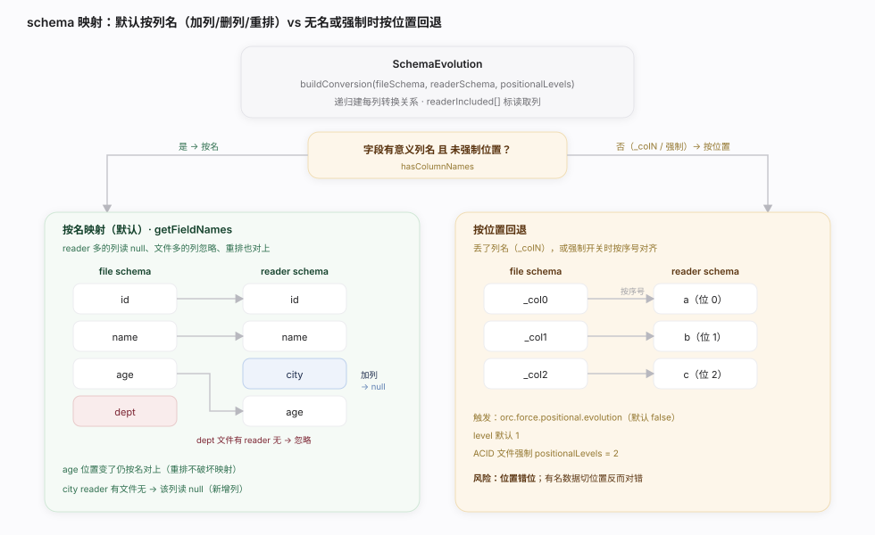
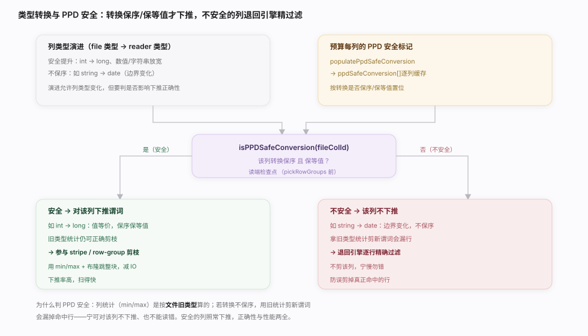
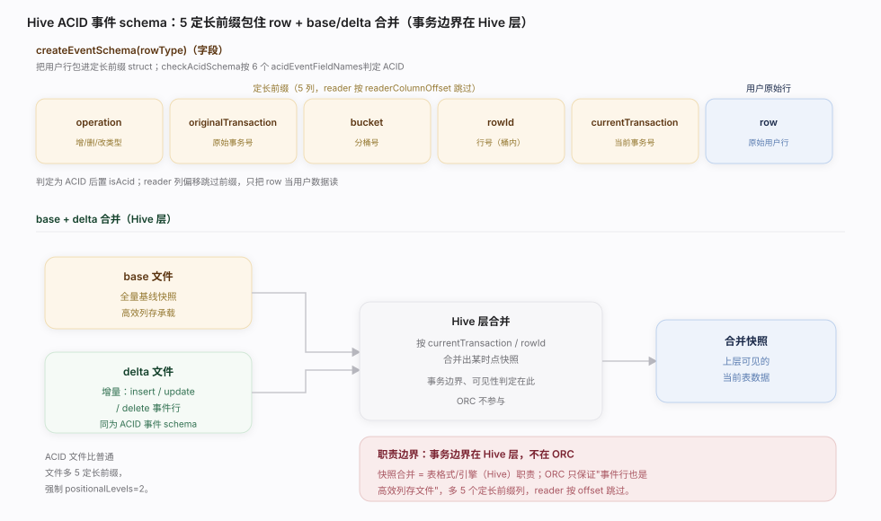
java/core/)。_col0),避免退位置映射带来的错位风险。| 结构 / 方法 | 位置 | 职责 |
|---|---|---|
| SchemaEvolution | SchemaEvolution.java:39 | file→reader schema 映射 |
| 按名匹配 | SchemaEvolution.java:153 | 遍历 file 字段名对齐 |
| hasColumnNames | SchemaEvolution.java:148 | _colN 无名则退位置 |
| FORCE_POSITIONAL_EVOLUTION | OrcConf.java:177 | 强制按位置(默认 false) |
| 位置映射层级 level | OrcConf.java:182 | 默认 1;ACID 文件强制 2 |
| populatePpdSafeConversion | SchemaEvolution.java:131 | 逐列缓存 PPD 是否安全 |
| isPPDSafeConversion | SchemaEvolution.java:303 | 转换是否可安全下推 |
| PPD 安全检查点 | RecordReaderImpl.java:1217 | 仅安全列下推谓词 |
| createEventSchema | SchemaEvolution.java:596 | ACID 事件 6 字段封装 |
| checkAcidSchema | SchemaEvolution.java:576 | 判定 ACID 文件 |